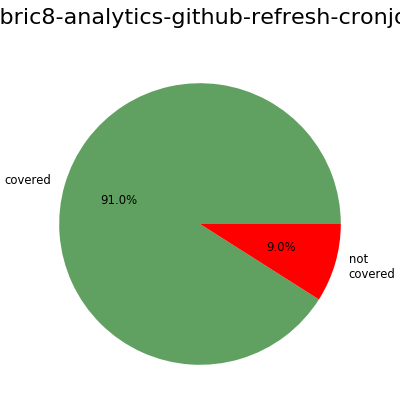
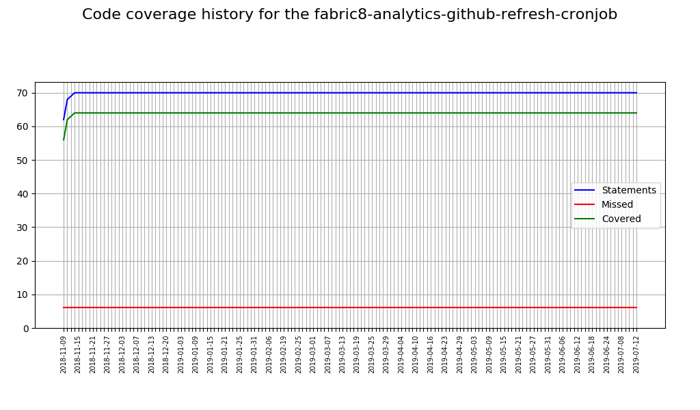
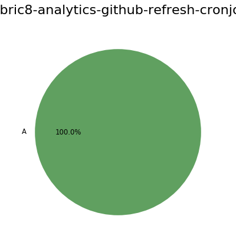
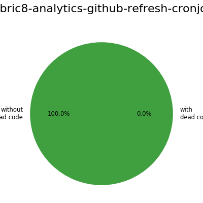
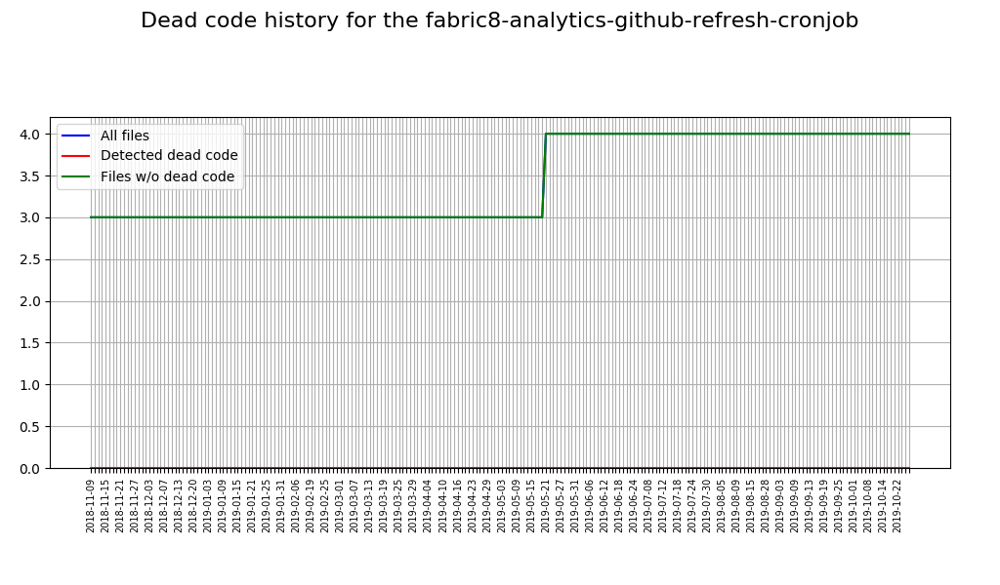
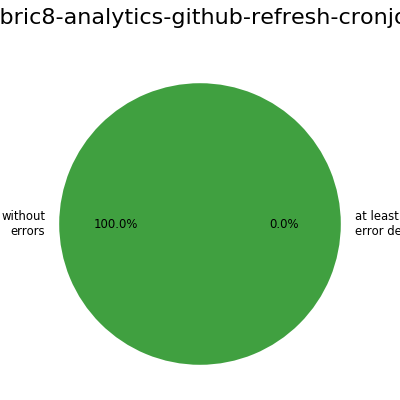
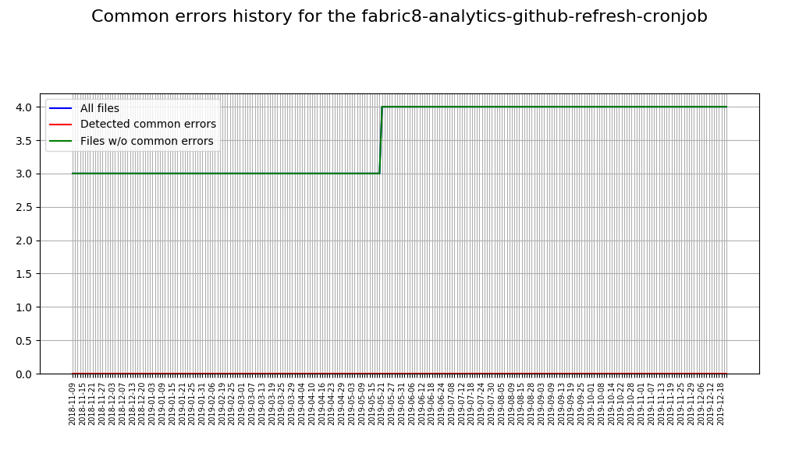

Fabric8-analytics charts for repository fabric8-analytics-github-refresh-cronjob
Code coverage


Cyclomatic complexity

Maintainability index
Dead code


Common errors


Author: Pavel Tisnovsky <
ptisnovs@redhat.com
>
Generated on: 2019-07-17 09:16:12